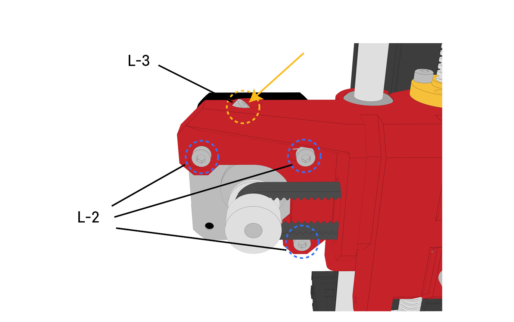

조립하기 3
Step.18
{kind=link}
● 도금봉-320mm(M)을 X-L블록(L)의 원형 홈에 삽입해 줍니다.(화살표 참조)
● 도금봉이 X-L 블록(L) 원형홈에 끝까지 삽입되었는지 확인합니다.
Step.19
{kind=link}
● X-L 블록(L)의 고정용 볼트를 H2.5 렌치를 이용하여 조여줍니다. 도금봉이 흔들리지 않도록 하기 위함입니다.
Step.20
{kind=link}
● STEP.19 과정에 이어 익스트루더(N)를 그림과 같이 화살표 방향으로 도금봉을 통과시켜 줍니다.
● 도금봉 통과시 볼베어링의 볼이 빠지지 않도록 유의하며 넣어줍니다.
Step.21
{kind=link}
● STEP.20 과정에 이어 X-R 블록(O)을 그림과 같이 화살표 방향으로 통과시킵니다.
● 도금봉이 X-R 블록(O) 원형홈에 끝까지 삽입되었는지 확인합니다.
Step.22
{kind=link}
● X-R 블록(O)의 고정용 볼트를 H2.5 렌치를 이용하여 조여줍니다. 도금봉이 흔들리지 않도록 하기 위함입니다.
Step.23
{kind=link}
● STEP.22 과정에서 완성된 세트를 조립된 3D 프린터의 Z축에 연결된 도금봉(G)에 그림과 같이 화살표 방향으로 통과시킵니다.
● 도금봉 통과시 볼베어링의 볼이 빠지지 않도록 유의하며 넣어줍니다.
Step.24
{kind=link}
● Top Cap-L(P)과 Top Cap-R(Q) 블록을 도금봉-400mm(G)에 그림과 같이 화살표 방향으로 구멍을 맞추어 끼워줍니다.
Step.25
{kind=link}
● M6-30 볼트로 Top Cap-R(Q) 블록을 Z 프로파일에 체결합니다.
● 반대편 Top Cap-L(P) 블록도 동일하게 체결합니다.
Step.26
{kind=link}
● H2.5 렌치를 이용하여 Z-L 블록의 고정용 볼트(J-1)를 조여줍니다.
● 도금봉이 흔들리지 않도록 하기 위함입니다.
● 반대편 Z-R 블록의 고정용 볼트도 동일하게 조여줍니다.
Step.27
{kind=link}
● H2.5 렌치를 이용하여 Top Cap-L(P) 고정용 볼트(P-1)를 조여줍니다.
● 도금봉이 흔들리지 않도록 하기 위함입니다.
● 반대편 Top Cap-R(Q)의 고정용 볼트도 동일하게 조여줍니다.
Step.28
{kind=link}
● H2 렌치로 커플러(J-2)의 검정 무두볼트(J-3, J-4) 2개를 조금 풀어줍니다.
● 완전히 다 풀면, 볼트가 빠져서 분실 될 수 있으니 유의합니다.
● 아래의 볼트(J-5)는 풀지 않습니다.
● 반대편도 동일하게 진행합니다.
Step.29
{kind=link}
● 리드스크류(R)를 Top Cap의 위쪽에서 화살표 방향으로 통과시켜 줍니다.
● 리드스크류(R)를 X-L 블록(L)을 통과시킨 후 커플러(J-2) 홈에 넣어줍니다.
● 리드스크류(R)는 너트(L-1) 통과시 돌리면서 통과시켜야 합니다.
Step.30
{kind=link}
● 리드스크류(R)의 끝부분을 Top Cap 블록의 높이조절 눈금(P-1)과 맞춰줍니다. 리드스크류(R)의 높이를 유지한 채로 Step.31을 진행합니다.
Step.31
{kind=link}
● 리드스크류(R)를 Top Cap의 위쪽에서 화살표 방향으로 통과시켜 줍니다.
● 리드스크류(R)를 X-L 블록(L)을 통과시킨 후 커플러(J-2) 홈에 넣어줍니다.
● 리드스크류(R)는 너트(L-1) 통과시 돌리면서 통과시켜야 합니다.
● 반대편도 동일하게 진행합니다.
※ 리드스크류를 너무 헐겁게 체결하거나, 너무 쎄게(휘어질 정도로) 체결해도 문제가 생깁니다. 커플러를 손으로 돌렸을 때, 리드스크류가 헛돌지 않을 정도로만 체결해주시면 됩니다.
Step.32
{kind=link}
● 조립된 3D 프린터를 뒤로 돌려 익스트루더(N-1)의 뒷면을 보고, 타이밍 벨트(I)를 화살표 방향으로 홈에 맞게 끼워줍니다.
● 타이밍 벨트는 Step.11 과정에서 남은 길이가 긴 것을 사용합니다.
Step.33
{kind=link}
● 그림과 같이 X-R 블록(O)에 타이밍 벨트(I)를 통과시켜 베어링(O-1)를 감싸고, X-R 블록(O) 아래로 통과시켜 안쪽으로 넣어줍니다.
● 그림과 같이 벨트의 이빨이 안쪽으로 감기도록 유의합니다.
Step.34
{kind=link}
● X-L 블록(L)에 타이밍 벨트(I)를 통과시켜 풀리(L-1)를 감싸고, X-L 블록(L) 위로 통과시켜 안쪽으로 넣어줍니다.
● 그림과 같이 벨트의 이빨이 안쪽으로 감기도록 유의합니다.
Step.35
{kind=link}
● 타이밍 벨트(I)를 익스트루더 뒷편의 홈(N-2)에 끼워넣어 벨트연결을 마무리합니다.
● 타이밍 벨트가 빠지지 않도록 끝까기 밀어넣어 끼워줍니다.
Step.36

{kind=link}
● X-L 블록(L)에서 볼트 3개(L-2)를 조금 풀어줍니다.
● 이후 상단의 볼트(L-3)를 조여주면서 X축 벨트의 장력을 확인합니다.
● 벨트 장력조절이 완료되면 풀어주었던 볼트 3개(L-2)를 다시 조여줍니다.